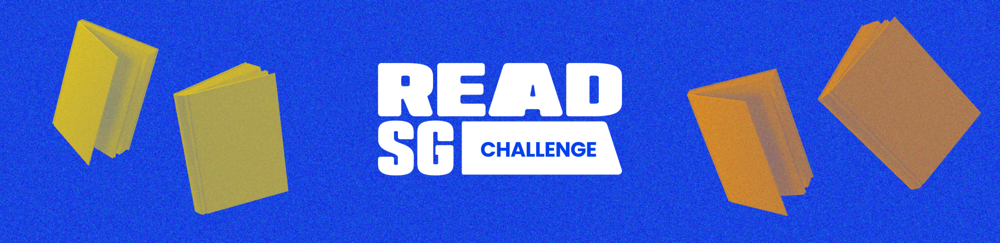
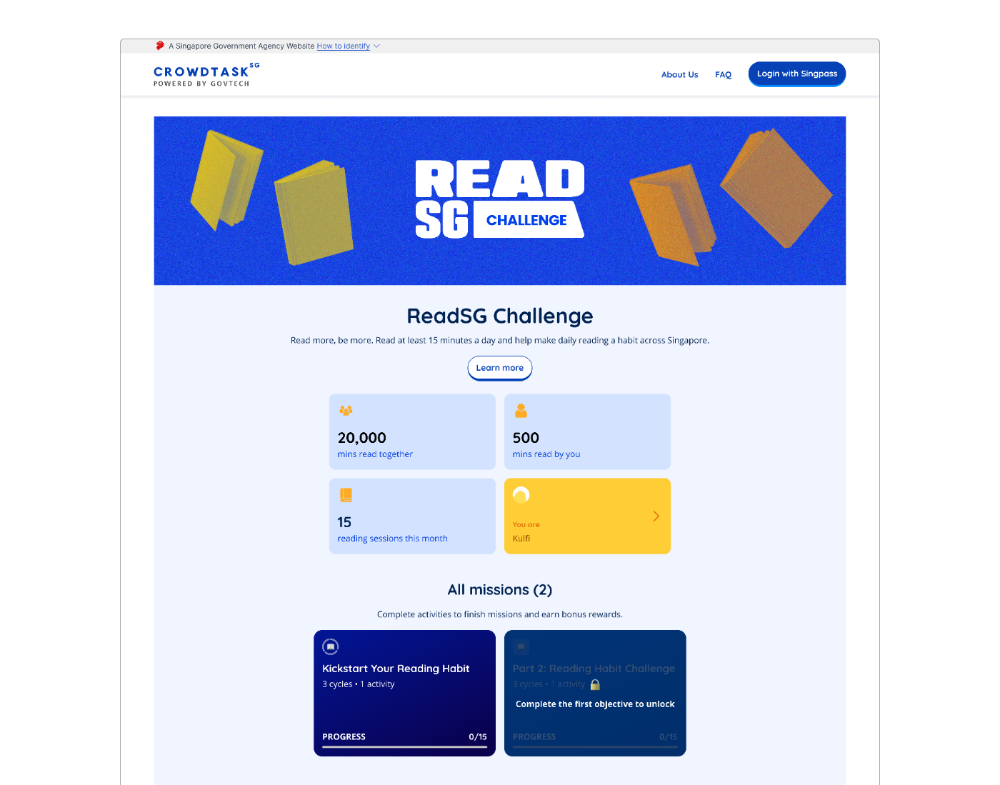
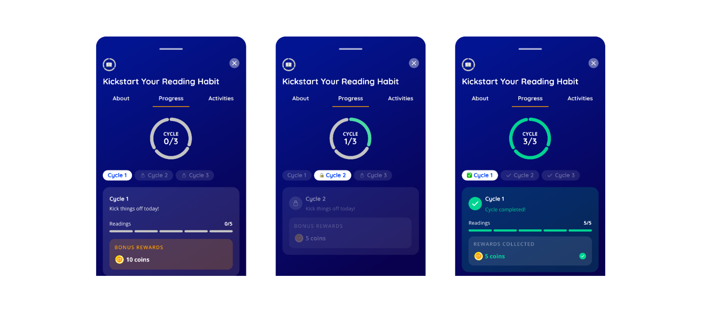
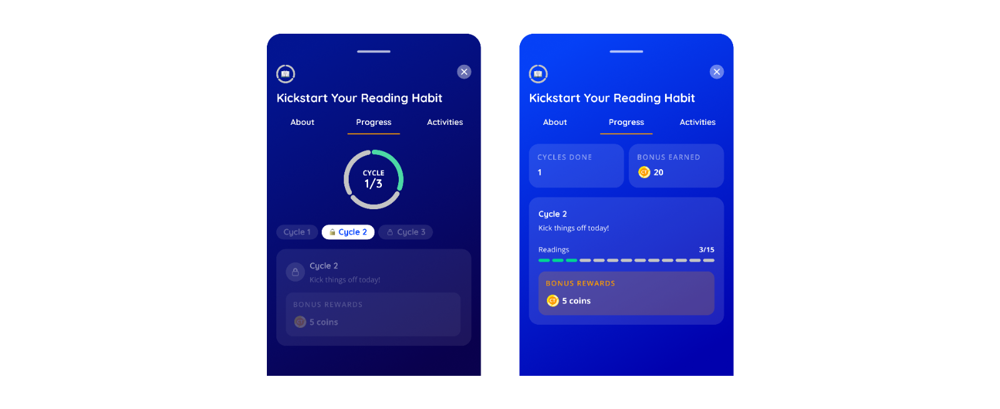

In the busyness of daily life, reading can easily become an occasional activity rather than a consistent habit. While NLB's Read for Books campaign sees strong participation, encouraging adults to sustain daily reading — and remain engaged beyond the campaign period — remains a challenge.
From a platform perspective, this presented an opportunity to explore how CrowdTaskSG could go beyond driving one-off campaign participation and help encourage sustained reading behaviours and longer-term engagement with NLB programmes.

How might we use CrowdTaskSG to encourage adults to build a consistent reading habit while sustaining engagement with NLB beyond a single campaign?
Primary objective
- Build consistent reading habits by encouraging users to incorporate reading into their daily routines.
- Drive participation in NLB programmes by creating stronger connections between digital engagement and Read for Books activities.
Platform objective
- Experiment with gamification for habit formation, using mechanics such as daily actions, progress tracking and rewards.
- Create reusable engagement patterns that could be adapted for future campaigns and other government agencies.
205,200
15-minute reading sessions
3.07 million
total reading minutes
50,000
unique users
Beyond quantitative metrics, qualitative feedback and participant stories will also be collected through redemption events and online feedback surveys to understand the campaign's impact on reading behaviours and overall experience.
To align the team early, we used Claude to co-work our way from idea to something clickable — generating a JSX prototype first, then an HTML build we could put in front of stakeholders in days instead of weeks.
The prototype showcased the full vision of the CrowdTaskSG platform, not just the next sprint. From there we worked backwards, deciding which features were realistic to deliver for the NLB launch and which belonged in later phases.
This prototype was built in Claude Cowork as part of a vision exercise — envisioning the end goal and future state of CrowdTaskSG, and the platform capabilities we would want to build to get there. The ReadSG Challenge quest page came out of that exercise: a way to make the direction tangible rather than described.
All missions
When a quest has multiple challenges running at once (a weekly habit loop plus several location-based hunts), users need a way to see everything available and decide where to spend their effort, instead of discovering objectives one at a time.

Objective bottom sheet
Once a user taps into an objective, they need more depth (why should I care, what's my progress, what do I need to do) without leaving their place in the quest flow. A full page navigation would break momentum, so I used a bottom sheet — a lightweight modal that keeps context of what triggered it.

Different types of cycles
How cycles with an end date vs. cycles without an end date differ.

- Designing the vision first made scoping easier. Once the team could see the full platform in a clickable prototype, deciding what to cut for the NLB launch became a conversation about sequence rather than a debate about value.
- Prototypes move stakeholders faster than decks. Putting something tappable in front of NLB surfaced real questions in one session that written specs had left ambiguous for weeks.
- Speed isn't the same as thinking it through. Claude got us to a working prototype fast, but it only builds the happy path — the empty, locked, expired and error states still had to be reasoned through and designed by hand. The time saved on building went straight into edge cases.